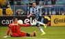

Grêmio Mania
A Grêmio Mania é uma rede de lojas oficial do clube, espalhadas por diversas cidades do Rio Grande do Sul. A loja vende os produtos mais diversos desde um kit original com camiseta, calção e meias até xícaras e chaveiros. Todos os produtos vendidos no estabelecimento são licenciados pelo clube. Acesse »
Grêmio Rádio
No dia 08/01/2015, o Grêmio em parceria com a Umbro lança a Grêmio Rádio Umbro, na frequência 90.3 FM, aonde o torcedor gremista acompanha ao vivo as transmissões dos jogos do tricolor na temporada. Acesse »
Últimas notícias
-

Grêmio empata com o Cruzeiro e segue na vice-liderança do Brasileiro
Tricolor ficou no empate em 3 a 3 com a equipe mineira. Leia mais »
-

CBF divulga tabela das quartas de final da Copa do Brasil
Grêmio e Atlético-PR jogarão em 28 de junho e 27 de julho. Leia mais »
-

Grêmio treina no Rio após vitória sobre o Flu
Grupo iniciou preparação para visitar o Cruzeiro em Belo Horizonte. Leia mais »